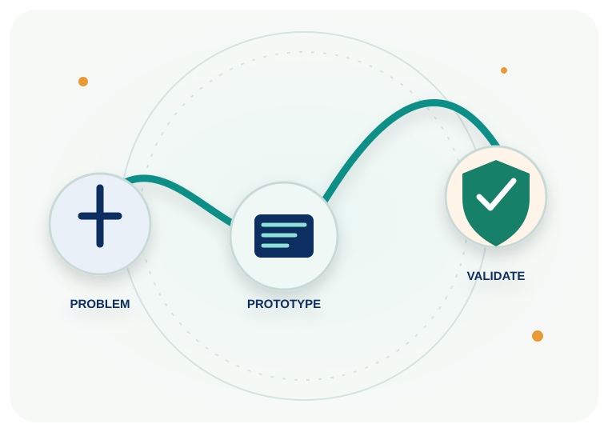
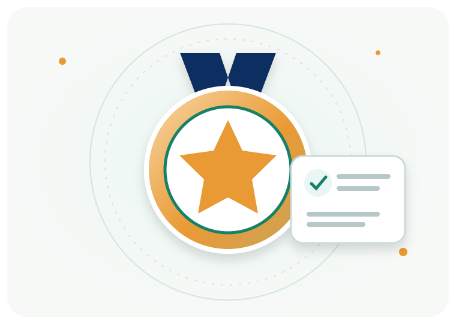

01 / PATHWAY
ALLIED HEALTH SCIENCESParamedical
Build foundational knowledge across clinical laboratory sciences, diagnostics, infection control and patient safety.
View pathway syllabusOne platform to demonstrate what you know, strengthen what you learn and take promising healthcare ideas closer to real-world impact.
Choose the assessment pathway that matches your discipline. Medical candidates can select undergraduate or postgraduate level during registration.
Build foundational knowledge across clinical laboratory sciences, diagnostics, infection control and patient safety.
View pathway syllabusStrengthen nursing foundations, applied anatomy and physiology, nutrition, community health and professional practice.
View pathway syllabusExplore anatomy, physiology, biochemistry, early clinical exposure and professional foundations.
Register for Medical UGApply clinical reasoning across core specialties and broad, cross-disciplinary postgraduate practice.
Register for Medical PGEvery practice paper connects back to the published subject map. Review topics, attempt sample MCQs, take a dedicated mock and identify where to focus next.
The QualiNova Healthcare Innovation Hackathon invites teams to develop ideas that address real needs in healthcare. Selected projects can progress through recognition, mentorship and a structured product-development support pathway.
Explore the Hackathon →

Academic recognition celebrates assessment performance. The Hackathon separately recognises selected ideas and teams, with a pathway to explore their development.
Keep the key preparation and submission dates in view.
Choose your registration category, understand your syllabus and begin preparing.